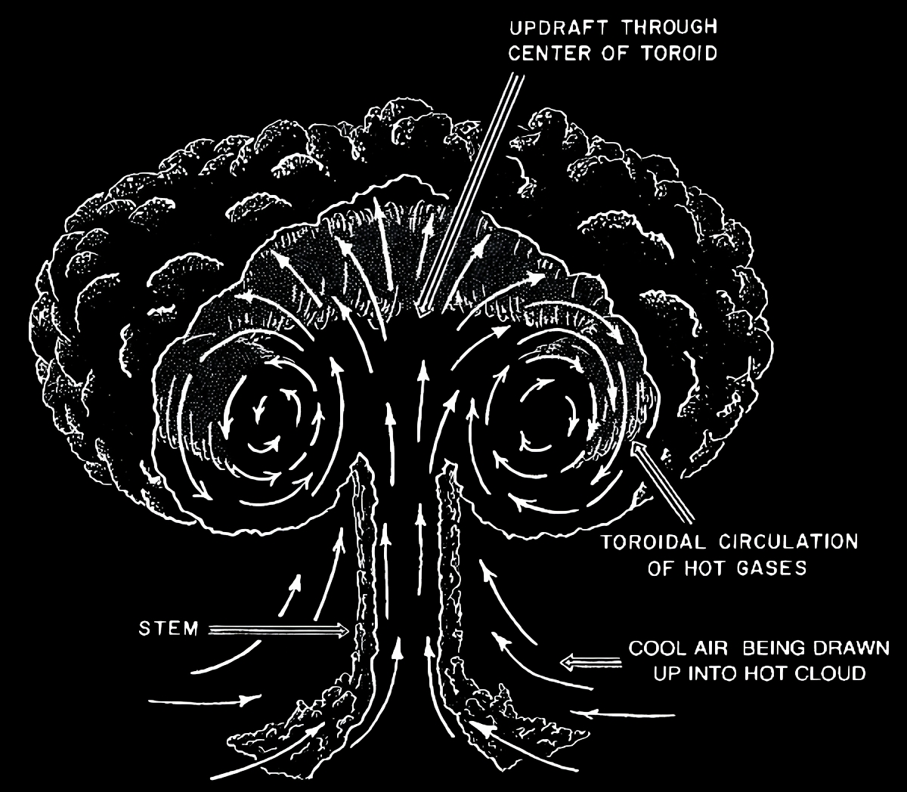
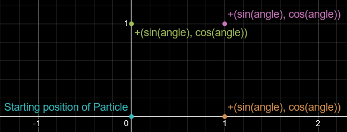

Part B: The Swirling Gases
Note: Before diving in, check out Part A: The Smoke Pillar for context.
This guide lays out the mathematical setup for creating a mushroom cloud. Let’s get swirling.
A mushroom cloud consists of two main parts:
- The pillar of smoke (Part A).
- The swirling gases (Part B).
This page is all about Part B-the swirly gas vortex thingy.
Math Time
WARNING: High levels of BS trig and circle math ahead. You have been warned.
Alright, time to model the swirly gases. Here’s a diagram to visualize what we’re dealing with:

We use sine and cosine to calculate how much each particle moves. And since describing math with words alone is painful, here’s more diagrams. Hooray!

By shifting a particle by (sin(angle), cos(angle)) as angle increases, we get a loop. At first, it looks more like a square than a circle, but don’t panic-just decrease the angle increment.
Also, if you’re wondering why x is offset by sin and y by cos (instead of the usual way), it’s so the particles move outward and then back in, meeting at a single point (which we can later tweak into a torus!).

Here’s what different increment values look like. Each set has one less visible point than labeled due to the 0→2π loop. More points = smoother circle.
In Minecraft, if you call super.tick() before displacement, it smooths out movement, so even Set 2 will look like it has way more than 10 points.
Also, the more points you add, the bigger the circle gets. This happens because P' = P + (sin(angle), cos(angle)), and a smaller increment moves P' farther.
You could "fix" this with ratios or something fancy, but honestly, just test it in-game. Too big? Divide the displacement value. Too small? Multiply it.
Math is constant, but art is a process. You’ll have to tweak things. I’d highly recommend adding dev commands to adjust radius values live in-game-it’ll save you from the dreaded
'Close Game → Change Variable → Open Game → Test → Repeat'.
If you’re anything like me, you’re probably staring at this wondering how the hell to implement it. And if you’re not, congrats, you’re smarter than me. But for the rest of us mortals, here’s some code from my mod that actually makes it work:
public void partB() {
// Increment the swirl angle and keep it within 0 to 2π range
angle += swirlInc;
if (angle >= 2 * Math.PI) angle -= 2 * Math.PI;
// Determine color interpolation based on the angle range
float rStart, rEnd, gStart, gEnd, bStart, bEnd;
if (angle < Math.PI) {
rStart = 255; rEnd = 115;
gStart = 75; gEnd = 115;
bStart = 0; bEnd = 115;
} else {
rStart = 125; rEnd = 255;
gStart = 115; gEnd = 75;
bStart = 115; bEnd = 0;
}
// Interpolate color based on the angle
float progress = (float) ((angle % Math.PI) / Math.PI);
this.rCol = (rStart + progress * (rEnd - rStart)) / 255;
this.gCol = (gStart + progress * (gEnd - gStart)) / 255;
this.bCol = (bStart + progress * (bEnd - bStart)) / 255;
// Calculate movement based on swirl motion
double verticalMovement = Math.cos(angle) * swirlRadius;
double horizontalMovement = Math.sin(angle) * swirlRadius * 1.5; // Slightly stretched swirl in z-direction
py += verticalMovement;
pz += horizontalMovement;
// Compute relative position adjustments
double relativeX = px - ox;
double relativeY = py - oy;
double relativeZ = pz - oz;
// Apply rotation transformation (around x-axis)
double rotatedX = relativeX * Math.cos(xRot) - relativeZ * Math.sin(xRot);
double rotatedZ = relativeX * Math.sin(xRot) + relativeZ * Math.cos(xRot);
// Apply additional offsets
rotatedX += offX;
rotatedZ += offZ;
// Set final particle position
this.setPos(ox + rotatedX, oy + relativeY, oz + rotatedZ);
}